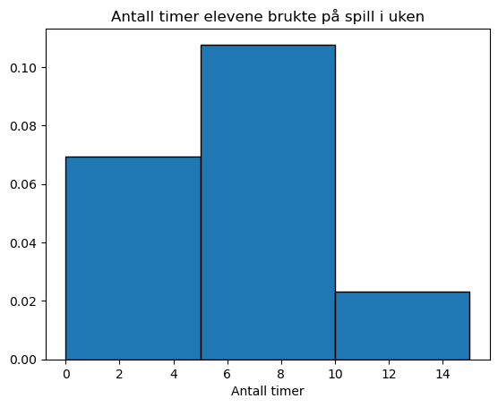
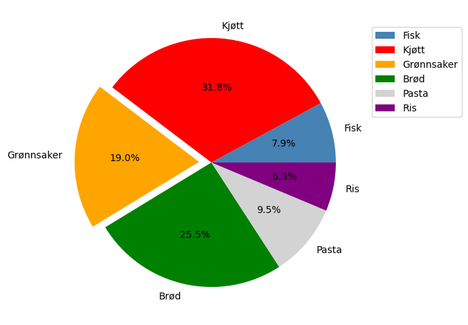
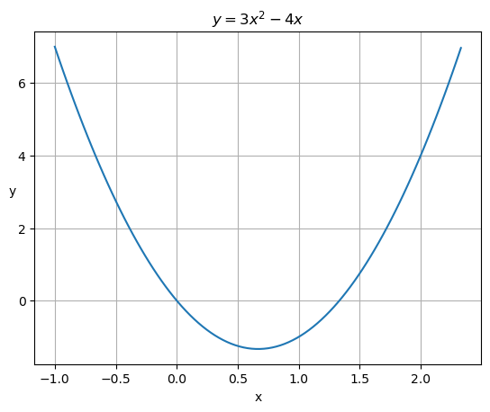
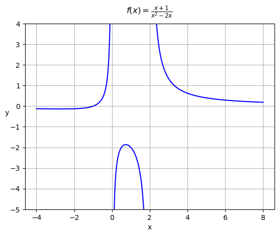
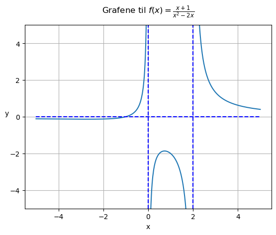
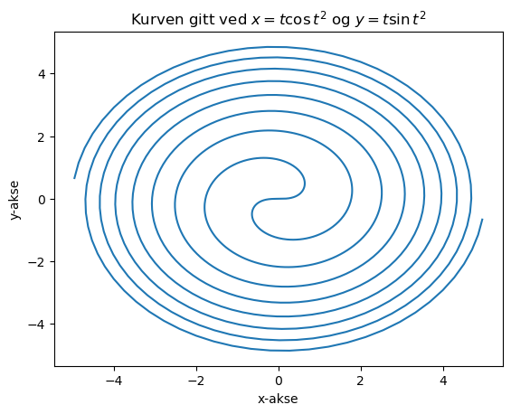
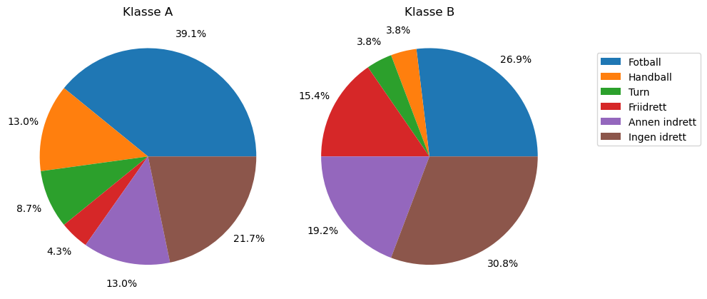
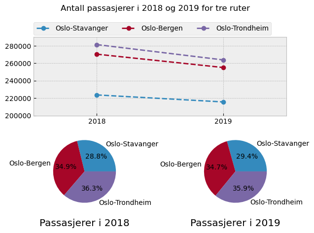
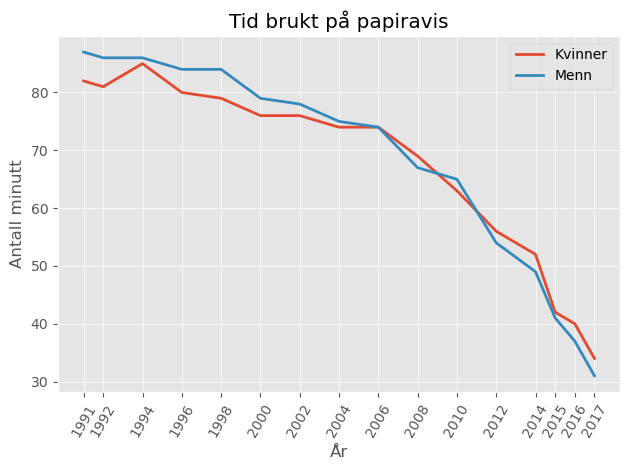

Løsningsforslag til utvalgte oppgaver i kapittel 4
Contents
Løsningsforslag til utvalgte oppgaver i kapittel 4¶
Oppgave 4.1¶
import matplotlib.pyplot as plt
import numpy as np
# Lager liste med rådata:
L = [7,7,8,8,5,4,8,3,6,5,4,7,2,1,8,7,7,0,1,4,5,8,12,14,12,3]
grenser = [0, 5, 10, 15]
plt.hist(L, bins=grenser, edgecolor='black', density=True)
plt.title("Antall timer elevene brukte på spill i uken")
plt.xlabel("Antall timer")
plt.show()
gjennomsnitt = np.mean(L)
print(f"Elevene brukte i gjennomsnitt {gjennomsnitt:.2f} timer på spill i uken")

Elevene brukte i gjennomsnitt 6.00 timer på spill i uken
Oppgave 4.3¶
import matplotlib.pyplot as plt
L = [ 7.9, 31.7, 19, 25.4, 9.5, 6.3]
labels=[ 'Fisk', 'Kjøtt', 'Grønnsaker', 'Brød', 'Pasta', 'Ris']
Farger = ['steelblue', 'red', 'orange', 'green', 'lightgray', 'purple']
plt.pie(L,
labels=labels,
autopct='%1.1f%%',
explode=(0, 0, 0.1, 0, 0, 0),
colors=Farger
)
plt.legend(labels, bbox_to_anchor=(1, .95))#, loc='upper left', borderaxespad=0.)
plt.tight_layout()
plt.show()

Oppgave 4.4¶
import numpy as np
import matplotlib.pyplot as plt
def f(x):
return 3*x**2 -4*x
x = np.linspace(-1, 2.33, 100)
plt.plot(x, f(x))
plt.xlabel('x')
plt.ylabel('y', rotation=0)
plt.title(r'$y = 3x^2 - 4x$')
plt.grid()
plt.show()

Oppgave 4.6¶
import numpy as np
import matplotlib.pyplot as plt
def f(x):
return (x+1)/(x**2-2*x)
x1 = np.linspace(-4, -.001, 100)
x2 = np.linspace(0.001, 1.99, 100)
x3 = np.linspace(2.001, 8, 100)
plt.plot(x1, f(x1), x2, f(x2), x3, f(x3), color='b')
plt.xlabel('x')
plt.ylabel('y', rotation=0)
plt.title(r'$f(x) = \frac{x+1}{x^2-2x}$', y=1.03)
plt.ylim(-5, 4)
plt.grid()
plt.show()

Dersom du synes det er litt juks å plotte grafen over tre områder, som vist ovenfor, kan du maskere vekk verdier.
import matplotlib.pyplot as plt
import numpy as np
def f(x):
return (x+1)/(x**2-2*x)
X = np.linspace(-5, 5, 600)
Y = f(X)
Y[Y > 10]=np.inf # Tar bort verdier som er for store.
Y[Y <-10] = -np.inf # eller for små.
plt.ylim(-5, 5)
plt.plot(X, Y)
# Horisontal asymptote:
plt.hlines(0,-5,5, linestyles="dashed", colors="b")
# Vertikale asymptoter:
plt.vlines(0, -5, 5, linestyles="dashed", colors="b")
plt.vlines(2, -5, 5, linestyles="dashed", colors="b")
plt.xlabel("x")
plt.ylabel("y", rotation=0)
plt.title(r"Grafene til $f(x)=\frac{x+1}{x^2-2x}$", y=1.04)
plt.grid()
plt.show()

Oppgave 4.7¶
import matplotlib.pyplot as plt
import numpy as np
T = np.linspace(-5, 5, 1000)
X = T*np.cos(T**2)
Y = T*np.sin(T**2)
plt.plot(X, Y)
plt.xlabel("x-akse")
plt.ylabel("y-akse")
plt.title(r"Kurven gitt ved $x=t\cos t^2$ og $y=t\sin t^2$")
plt.show()

Oppgave 4.8¶
import matplotlib.pyplot as plt
Idretter = ["Fotball", "Handball", "Turn", "Friidrett", "Annen indrett", "Ingen idrett"]
KlasseA = [9, 3, 2, 1, 3, 5]
KlasseB = [7, 1, 1, 4, 5, 8]
plt.figure(figsize=(10, 5))
plt.subplot(1, 2, 1) # Klasse A
plt.title("Klasse A")
plt.pie(KlasseA, autopct="%1.1f%%", pctdistance=1.2)
plt.subplot(1, 2, 2) # Klasse B
plt.title("Klasse B")
plt.pie(KlasseB, autopct="%1.1f%%", pctdistance=1.2)
plt.legend(Idretter, fancybox=True, bbox_to_anchor=(1.1, .9))
plt.tight_layout()
plt.show()

Oppgave 4.9¶
import matplotlib.pyplot as plt
import numpy as np
P2018 = [223653 , 270427 , 281429]
P2019 = [215615 , 255117 , 263853]
Flyruter = ["Oslo-Stavanger", "Oslo-Bergen", "Oslo-Trondheim"]
År = [2018, 2019]
plt.style.use("bmh")
fig = plt.figure()
fig.suptitle("Antall passasjerer i 2018 og 2019 for tre ruter")
plt.subplot(2,1, 1)
plt.xlim(2017.5, 2019.5) # For å få litt luft
plt.ylim(200000, 290000)
plt.plot(År, [223653, 215615], "o--", label="Oslo-Stavanger")
plt.plot(År, [270427, 255117], "o--", label="Oslo-Bergen")
plt.plot(År, [281429, 263853], "o--",label="Oslo-Trondheim")
plt.xticks(År)
plt.legend(loc=(0, 1.03), ncol=3)
plt.subplot(2, 2, 3)
plt.title("Passasjerer i 2018", y=-0.25)
plt.pie(P2018, autopct="%.1f%%", labels=Flyruter)
plt.subplot(2, 2, 4)
plt.title("Passasjerer i 2019", y=-0.25)
plt.pie(P2019, autopct="%.1f%%", labels=Flyruter)
plt.tight_layout()
plt.show()

Oppgave 4.10¶
import matplotlib.pyplot as plt
# For å slippe å lage listen manuelt:
År = list(range(1992, 2017, 2))
År = År + [1991, 2015, 2017]
År.sort()
Kvinner = [82, 81, 85, 80, 79, 76, 76, 74, 74, 69, 63, 56, 52, 42, 40, 34]
Menn = [87, 86, 86, 84, 84, 79, 78, 75, 74, 67, 65, 54, 49, 41, 37, 31]
plt.style.use("ggplot")
plt.plot(År, Kvinner , label="Kvinner")
plt.plot(År, Menn, label="Menn")
plt.xlabel("År")
plt.ylabel("Antall minutt")
plt.xticks(År, rotation=60)
plt.legend()
plt.title("Tid brukt på papiravis")
plt.tight_layout()
plt.show()

Oppgave 4.11¶
import matplotlib.pyplot as plt
import numpy as np
Høyder = [184.3, 196.5, 189.0, 190.0, 180.5,
187.8 , 180.5 , 185.8 ,
186.7 , 182.4 , 185.4 ,
167.5 , 183.7 , 183.4 ,
183.3 , 176.5 , 182.7 ,
170.5 , 174.4 , 182.5]
gjennomsnitt = np.mean(Høyder)
standardavvik = np.std( Høyder, ddof=1) # ddof = 1 fordi vi har et utvalg.
print(f"Gjennomsnittet er {gjennomsnitt:.2f} cm")
print(f"Standardavviket er {standardavvik:.2f} cm")
plt.style.use("seaborn-v0_8")
plt.title("Høyden til rekruttene i to lag", fontdict={"fontsize": 18})
Grenser = [170, 175, 180, 185, 190]
plt.hist(Høyder, Grenser, edgecolor="w", density=True)
plt.xlabel("Høyde (i cm)")
plt.xticks(Grenser)
plt.show()
Gjennomsnittet er 182.67 cm
Standardavviket er 6.66 cm